관광통역안내사-1교시 (2015-09-05 기출문제)
1과목: 한국사
1. 구석기 유적으로 옳지 않은 것은?
- 양양 오산리 유적
- 연천 전곡리 유적
- 공주 석장리 유적
- 상원 검은모루 유적
(정답률: 89%)

2. ( )에 들어갈 내용을 옳게 나열한 것은?
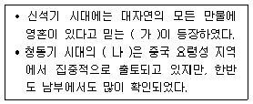
- 가 - 토테미즘, 나 - 세형 동검
- 가 - 애니미즘, 나 - 비파형 동검
- 가 - 샤머니즘, 나 - 반달돌칼
- 가 - 토테미즘, 나 - 명도전
(정답률: 79%)
3. 2015년 7월 세계유산위원회(World HeritageCommittee)가 유네스코 세계유산목록에 등재하기로 결정한 ‘백제역사유적지구’에 포함되지 않는 것은?
- 공주 수촌리 고분군
- 공주 공산성
- 부여 부소산성
- 익산 미륵사지
(정답률: 67%)
4. 삼국과 일본의 문화 교류 내용으로 옳지 않은 것은?
- 백제의 노리사치계는 불교를 전해주었다.
- 신라는 조선술과 축제술 등을 전해주었다.
- 백제의 왕인은 천자문과 논어를 전해주었다.
- 고구려의 담징은 천문학과 역법을 전해주었다.
(정답률: 69%)
5. 삼국 시대 금석문 자료에 관한 설명으로 옳은 것은?
- 사택지적비를 통해 백제인들의 유학 사상을 알 수 있다.
- 단양 적성비를 통해 진흥왕 대의 정복 사업을 알 수 있다.
- 임신서기석을 통해 신라인들이 도교를 숭배 했음을 알 수 있다.
- 광개토왕릉비를 통해 장수왕의 평양 천도 사실을 알 수 있다.
(정답률: 63%)
6. 백제시대의 왕과 주요 업적을 연결한 것으로 옳은 것은?
- 근초고왕 - 서기 편찬
- 문주왕 – 사비 천도
- 무령왕 – 동진과 교류
- 성왕 – 미륵사 창건
(정답률: 60%)
7. 신라의 전통적인 왕호가 아닌 것은?
- 이사금(尼師今)
- 대대로(大對盧)
- 차차웅(次次雄)
- 거서간(居西干)
(정답률: 88%)
8. 고구려와 당의 전쟁에 관한 내용으로 옳은 것을 모두 고른 것은?
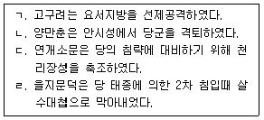
- ㄱ, ㄴ
- ㄱ, ㄹ
- ㄴ, ㄷ
- ㄷ, ㄹ
(정답률: 78%)
9. 고려시대의 토지 종류와 그 대상을 연결한 것으로 옳은 것은?
- 과전 - 농민
- 민전 - 향리
- 공해전 - 관청
- 내장전 - 군인
(정답률: 67%)
10. 호족에 대한 고려 태조의 정책으로 옳지 않은 것은?
- 귀순한 호족에게 왕씨 성을 주었다.
- 유력한 호족의 딸을 왕비로 맞이하였다.
- 공을 세운 호족들을 공신으로 책봉하였다.
- 향리의 자제를 개경에 불러 사심관으로 삼았다.
(정답률: 75%)
11. 고려시대의 팔관회에 관한 설명으로 옳은 것을 모두 고른 것은?
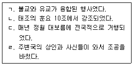
- ㄱ, ㄷ
- ㄴ, ㄹ
- ㄷ, ㄹ
- ㄴ, ㄷ, ㄹ
(정답률: 54%)
12. 묘청의 난에 관한 설명으로 옳지 않은 것은?
- 윤관에 의해 진압되었다.
- 풍수도참설이 이용되었다.
- 금나라 정벌을 주장하였다.
- 칭제건원(稱帝建元)을 주장하였다.
(정답률: 77%)
13. 신진 사대부에 관한 설명으로 옳지 않은 것은?
- 조선 왕조 건국의 주역이 되었다.
- 성리학을 수용하여 학문적 기반으로 삼았다.
- 최고의 정치 기구로 교정도감을 설치하였다.
- 공민왕의 개혁정치 과정에서 정계진출이 확대 되었다.
(정답률: 79%)
14. 조선시대 관리 등용제도에 관한 설명으로 옳지 않은 것은?
- 무과 예비 시험으로 소과가 있었다.
- 잡과는 분야별로 합격 정원이 있었다.
- 과거, 음서, 천거를 통해 관리를 선발하였다.
- 권력의 집중과 부정을 막기 위해 상피제를 실시 하였다.
(정답률: 69%)
15. 조선 전기 정치상황에 관한 설명으로 옳은 것을 모두 고른 것은?
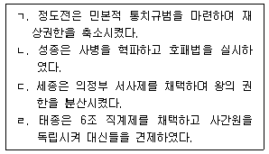
- ㄱ, ㄴ
- ㄱ, ㄹ
- ㄴ, ㄷ
- ㄷ, ㄹ
(정답률: 80%)
16. 조선 정조 대에 편찬된 법전은?
- 속대전
- 경국대전
- 대전통편
- 대전회통
(정답률: 73%)
17. 다음의 내용과 관련된 것은?
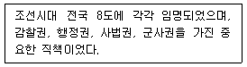
- 갑사(甲士)
- 삼사(三司)
- 관찰사
- 암행어사
(정답률: 100%)
18. 조선 전기 문화상에 관한 설명으로 옳은 것은?
- 정간보의 창안
- 향약구급방의 편찬
- 판소리와 탈춤의 성행
- 오주연문장전산고의 편찬
(정답률: 70%)
19. 조선 후기 사회모습에 관한 설명으로 옳은 것을 모두 고른 것은?
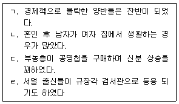
- ㄱ
- ㄴ, ㄷ
- ㄴ, ㄹ
- ㄱ, ㄷ, ㄹ
(정답률: 100%)
20. 조선 후기 인물과 작품이 바르게 연결된 것은?
- 강희안 - 송하보월도
- 김정호 - 대동여지도
- 안 견 - 몽유도원도
- 이상좌 - 고사관수도
(정답률: 88%)
21. 조선 후기 경제상황에 관한 설명으로 옳지 않은 것은?
- 대규모 경작의 성행
- 타조제에서 도조제로 변화
- 직파법에서 이앙법으로 변화
- 해동통보의 보급과 성행
(정답률: 72%)
22. 독립협회에 관한 설명으로 옳지 않은 것은?
- 개화파 지식인들이 중심이 되어 설립하였다.
- 회원자격에 제한을 두지 않아 사회적으로 천대받던 계층도 참여하였다.
- 지방에도 지회가 조직되어 전국적인 단체로 발전하였다.
- 황국협회와 협력하여 개혁을 추구하였다.
(정답률: 86%)
23. 다음의 내용과 관련된 사건으로 옳은 것은?
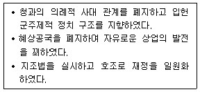
- 갑신정변
- 갑오개혁
- 임오군란
- 1⑤인 사건
(정답률: 65%)
24. 다음에서 설명하는 책을 저술한 인물은?
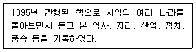
- 김윤식
- 박은식
- 유길준
- 최남선
(정답률: 89%)
25. ( )에 들어갈 내용으로 옳은 것은?
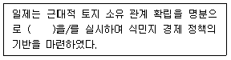
- 방곡령
- 회사령
- 국가 총동원법
- 토지 조사 사업
(정답률: 100%)
2과목: 관광자원해설
26. 관광자원의 유형별 특징에 관한 설명으로 옳지 않은 것은?
- 산업적관광자원은 1차, 2차, 3차 산업현장을 관광 대상으로 한 자원으로 재래시장이 한 예이다.
- 위락적관광자원은 이용자의 자주적, 자기발전적 성향을 충족시킬 수 있는 동태적 관광자원이다.
- 사회적관광자원은 한 나라에 대한 객관적 이해와 경험을 바탕으로 관광객의 자아확대 욕구를 충족시켜 준다.
- 자연적관광자원은 자연 그대로의 모습이 관광자원 역할을 하는 것으로 해변, 계곡, 목장, 어촌 등을 포함한다.
(정답률: 38%)
27. 관광자원해설에 관한 설명으로 옳지 않은 것은?
- 단순한 정보를 제공하는 것이 아니라 관광 대상의 가치를 높여 주는 교육적 활동이다.
- 관광지에서 적정한 관광행동을 할 수 있도록 공간을 유지∙관리하는 일련의 활동이다.
- 자원보전적 활동으로서 관광대상과 환경 간의 상호관련성을 파악하고 이해시키는 행위이다.
- 해설사가 직접 의사를 전달하는 인적기법과 시설 및 매체를 활용하는 비인적기법이 있다.
(정답률: 79%)
28. 민속마을 - 온천 - 해수욕장이 행정구역상 모두 같은 도(道)에 위치하는 것은?
- 외암민속마을 - 도고온천 - 함덕해수욕장
- 양동민속마을 - 백암온천 - 구룡포해수욕장
- 왕곡민속마을 - 수안보온천 - 선유도해수욕장
- 낙안읍성민속마을 - 담양온천 - 무창포해수욕장
(정답률: 71%)
29. 우리나라 국립공원이 지정된 순서대로 나열한 것은?
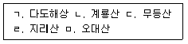
- ㄴ - ㄹ - ㄱ - ㄷ - ㅁ
- ㄴ - ㄹ - ㅁ - ㄷ - ㄱ
- ㄹ - ㄴ - ㄷ - ㅁ - ㄱ
- ㄹ - ㄴ - ㅁ - ㄱ - ㄷ
(정답률: 84%)
30. 석회동굴 - 용암동굴 - 해식동굴의 순서대로 바르게 나열한 것은?
- 영월 고씨동굴 - 제주 만장굴 - 제주 협재굴
- 제주 김녕사굴 - 제주 만장굴 - 제주 산방굴
- 단양 고수동굴 - 제주 협재굴 - 제주 산방굴
- 삼척 환선굴 - 단양 온달동굴 - 제주 정방굴
(정답률: 67%)
31. 천연기념물만으로 짝지어진 것이 아닌 것은?
- 쇠똥구리, 오소리, 사향노루
- 한라산천연보호구역, 홍도천연보호구역
- 대구 도동 측백나무 숲, 김해 신천리 이팝나무
- 제주 서귀포층 패류화석 산지, 의령 서동리 함안층 빗방울 자국
(정답률: 60%)
32. 지역과 컨벤션센터의 연결이 옳지 않은 것은?
- 서울 - COEX
- 부산 - BEXCO
- 대구 - DEXCO
- 제주 - ICC JEJU
(정답률: 90%)
33. 경복궁 근정전 앞 품계석에 관한 설명으로 옳지 않은 것은?
- 벼슬의 높낮이 순서대로 관계(官階)의 품(品)을 새겨 세운 돌이다.
- 근정전까지 이어진 삼도(三道)를 따라 좌우에 세워져 있다.
- 동편에는 무관, 서편에는 문관이 위치한다.
- 1품에서 3품까지는 정(正), 종(傱)으로 구분 하였다.
(정답률: 75%)
34. 성곽에 관한 설명으로 옳지 않은 것은?
- 간문은 눈에 잘 띄지 않는 은밀한 곳에 내는 작은 성문이다.
- 현안은 성벽에 가까이 다가온 적을 공격하기 위해 성벽 외벽 면을 수직에 가깝게 뚫은 시설이다.
- 여장은 성체 위에 설치하는 구조물로 적으로 부터 몸을 보호하기 위하여 낮게 쌓은 담장이다.
- 적대는 성문 좌우에 바깥쪽으로 튀어나오게 쌓은 성벽으로 성문을 공격하는 적을 옆에서 공격하기 위한 시설이다.
(정답률: 34%)
35. 한 꼭짓점에서 지붕골이 만나는 형태로 주로 정자에 사용되는 지붕은?
- 모임지붕
- 팔작지붕
- 맞배지붕
- 우진각지붕
(정답률: 75%)
36. 서울소재 공원과 관련 인물의 연결이 옳지 않은 것은?
- 효창공원 - 김구
- 구암공원 - 이제마
- 도산공원 - 안창호
- 낙성대공원 - 강감찬
(정답률: 65%)
37. 2015년 문화체육관광부 지정 문화관광축제 중 대표축제를 모두 고른 것은?
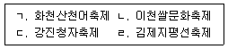
- ㄱ, ㄴ
- ㄱ, ㄹ
- ㄴ, ㄷ
- ㄷ, ㄹ
(정답률: 83%)
38. 사천왕상의 이름과 수호지역 방향이 올바르게 연결된 것은?
- 광목천왕 - 동쪽
- 다문천왕 - 서쪽
- 증장천왕 - 남쪽
- 지국천왕 - 북쪽
(정답률: 40%)
39. 불교에서 말하는 삼보(三寶)에 해당하지 않는 것은?
- 진리를 깨친 모든 부처님
- 모범이 되고 바른 부처님의 교법
- 부처님의 가르침대로 수행하는 사람
- 스님들이 업보로 돌아가 수행하는 공간
(정답률: 71%)
40. 꽃벽돌로 장식된 아미산 굴뚝과 자경전 십장생 굴뚝이 있는 궁(宮)은?
- 창덕궁
- 경희궁
- 덕수궁
- 경복궁
(정답률: 59%)
41. 국보 제36호로 국내 현존하는 최고(最古)의 범종은?
- 상원사 동종
- 용주사 동종
- 성덕대왕신종
- 옛 보신각 동종
(정답률: 53%)
42. 다음이 설명하는 인물은?
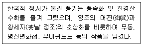
- 강세황
- 김정희
- 장승업
- 김홍도
(정답률: 53%)
43. 유네스코에 등재된 무형문화유산이 아닌 것은?
- 판소리
- 봉산탈춤
- 강릉단오제
- 남사당놀이
(정답률: 67%)
44. 사찰에 관한 설명으로 옳지 않은 것은?
- 화엄사 - 주 건물은 각황전으로 비로자나불을 모시고 있다.
- 통도사 - 대웅전 안에 불상을 모시지 않고 불단만 마련해 놓았다.
- 송광사 - 의상대사에 의해 창건되었고 원효, 서산대사 등이 수도하였다.
- 해인사 - 합천 해인사 대장경판, 합천 해인사 장경판전이 있으며 법보사찰이라고 한다.
(정답률: 65%)
45. 서원이나 향교를 비롯해 능(陵) 앞에 설치되며, 신성한 구역임을 알리는 상징적 구조물은?
- 고직사
- 전사청
- 연화문
- 홍살문
(정답률: 77%)
46. 문양을 그리지 않고 바탕색으로 마무리하는 단순한 형태의 단청은?
- 모로단청
- 얼금단청
- 긋기단청
- 가칠단청
(정답률: 50%)
47. 왕이 궁궐을 떠나 지방에서 임시로 머무르는 궁(宮)은?
- 동궁
- 행궁
- 중궁
- 서궁
(정답률: 95%)
48. 석탑의 구성 중 상륜부에 해당하지 않는 것은?
- 탱주
- 찰주
- 수연
- 보주
(정답률: 54%)
49. 통상 사찰 뒤쪽에 위치하며 독성, 산신, 칠성신을 모신 곳은?
- 나한전
- 대웅전
- 삼성각
- 약사전
(정답률: 65%)
50. 다음이 설명하는 것은?
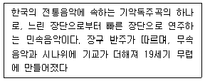
- 산조
- 가사
- 제례악
- 연례악
(정답률: 56%)